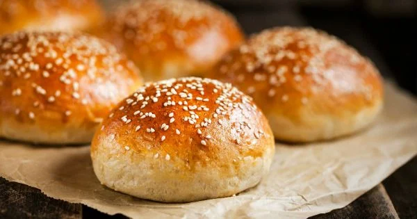

POFUDUK POĞAÇA TARİFİ

Description;
Wouldn't you like to make soft fluffy pastries that you can consume with a glass of tea, cucumber and tomato for your breakfasts? It is also very easy to make plain fluffy pastries that you will love the flavor, you can put in your children's nutrition or you can eat when you have to leave the house without breakfast in the morning. You can also prepare yeast fluffy pastries that you can easily obtain the ingredients and store them in your freezer and then you can easily consume them.
Ingredients;
- 1 cup warm water
- 1 cup warm milk
- 1 cup of vegetable oil
- 1 egg
- 1 packet of instant dry yeast
- 2 teaspoons salt
- 4 tablespoons of sugar
- 6-7 cups flour
Steps;
- Put warm milk and water (it will be at a temperature that will not burn your hands), egg, oil, sugar, salt, yeast into a deep kneading bowl and mix.
- Add flour gradually and knead the dough well.
- Cover the dough and let it ferment for about 45 minutes, 1 hour.
- When the dough doubles in size, knead it a few more times to remove the air.
- Pick tangerine sized pieces from the dough and roll them in your palms.
- Place them on a tray covered with greaseproof paper, brush them with egg yolk and sprinkle sesame seeds on them.
- Let it rest again for 10-15 minutes for the tray to ferment.
- Then bake in the oven at 180°C for about 25 minutes until the top turns golden brown. Serve after the first temperature is removed.